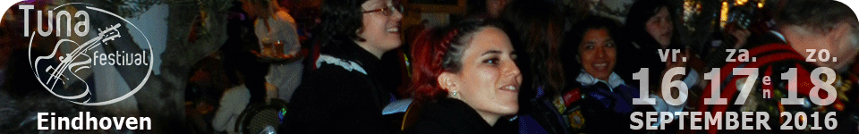
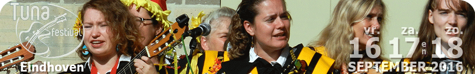
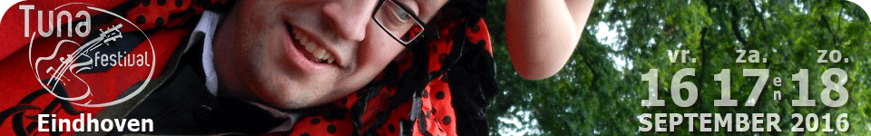
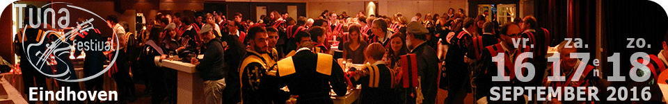
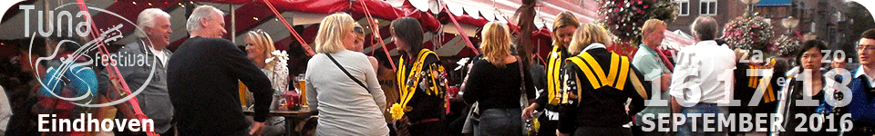
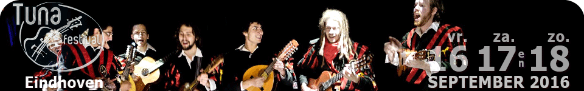
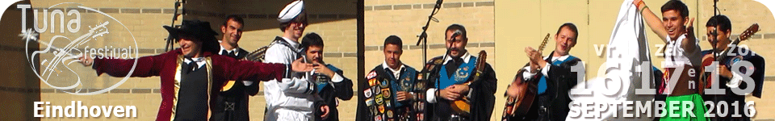
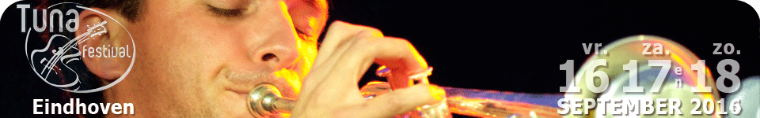
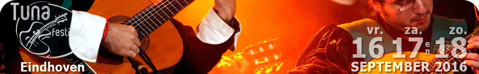
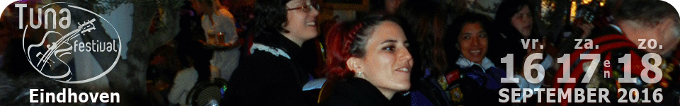
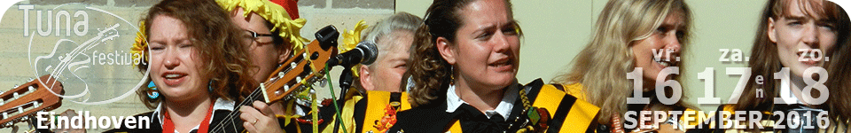
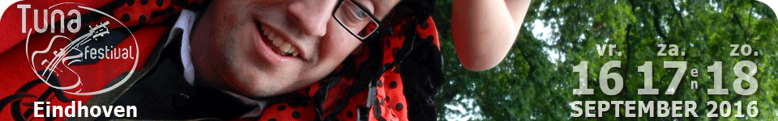
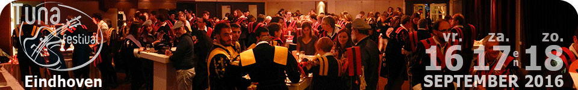
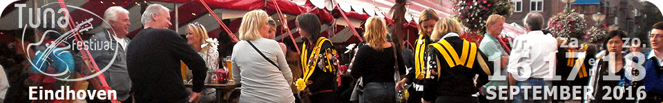
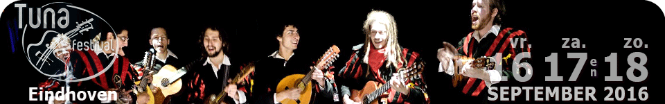
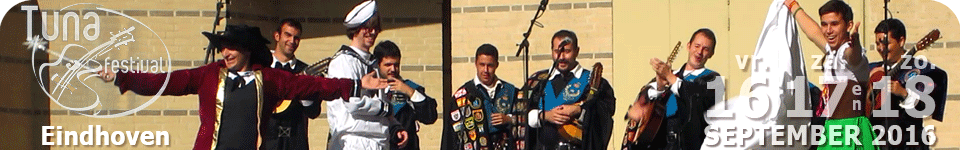
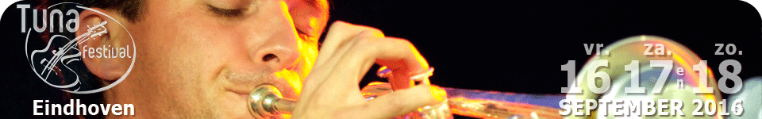
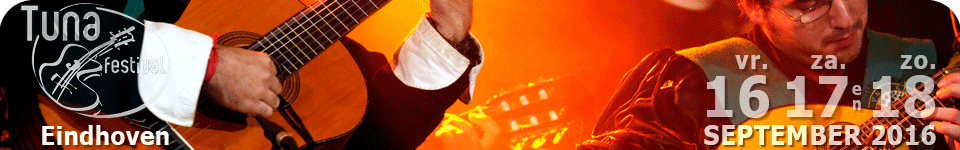
Laatste nieuws
Noche de Tuna 2010
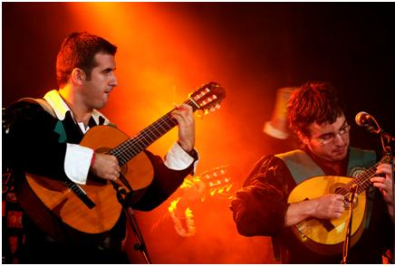
Op vrijdag 17 en zaterdag 18 september 2010 krijgt Eindhoven weer Spaanse Tuna-groepen op bezoek voor de 'Noche de Tuna IV'! Op vrijdagavond zijn vier kroegen in het centrum van Eindhoven het decor voor de vrolijke studentenliedjes en subtiele serenades. Op zaterdagmiddag strijden de 4 Spaanse Tunagroepen op een vriendschappelijke wijze om een aantal muzikale prijzen. Eindhoven’s Tuna groepen, Tuna Ciudad de Luz en La Tuniña, zullen ook op het podium staan. Dit Spaans feestje vindt op zaterdag plaats rondom de kiosk en het stadspaviljoen. De Tuna groepen zullen hier de muziek verzorgen en u kunt er genieten van de Spaanse hapjes, drankjes en gezelligheid.
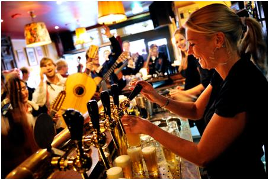